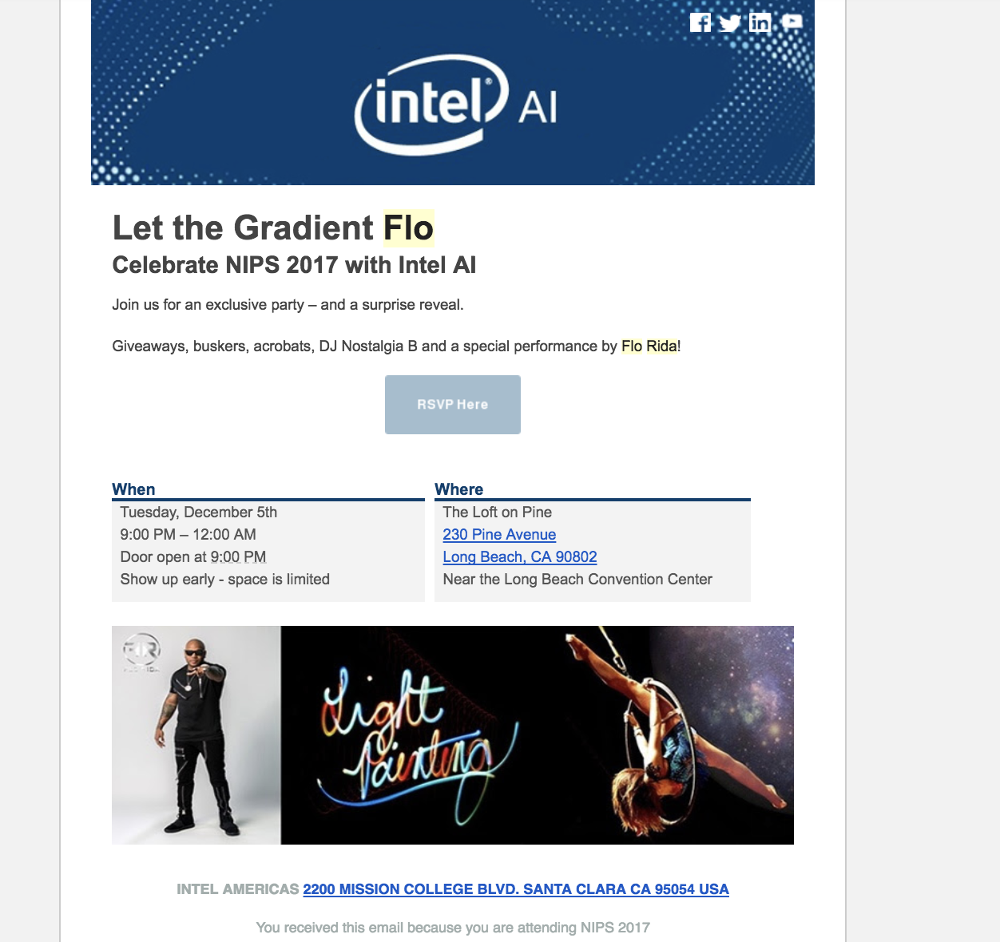
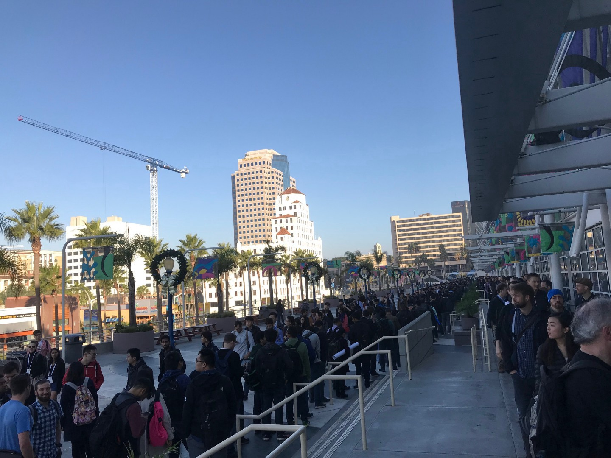

NIPS 2017 Highlights
The hype continues
Like many of the attendees, this was my first NIPS conference. Overall a great experience, and I doubt there is any substitute for meeting interesting people and learning about the current state of machine learning. Here I’ll mention a few of the highlights of the conference for me, and some of the weirdness.
Money is flooding in from everywhere in AI, with desperate investors trying to get a piece of the pie. Free alcohol and parties every night was unexpected for an academic conference:
|  |
|---|
| :–: |
| If this doesn’t signal a bubble I don’t know what does |
With this level of hype there can be some downsides:
|  |
|---|
| Over 8000 people attended, and they all needed to register |
Rigor vs. Accuracy
In the last few years the field of machine learning has become obsessed with the performance provided by larger and less interpretable deep neural networks. Not everyone is in love with the hype. According to Ali Rahimi:
Machine learning isn’t the new electricity, it is alchemy. We should start from simple, easy to understand things and then move onto more complex things. Currently we apply brittle optimization techniques to loss surfaces we don’t understand
Yann LeCun’s response:
We often use methods before we fully understand them in engineering and it has made the world a better place. Don’t throw the baby out with the bathwater
There was also a debate about model interpretability, where many of the same arguments are thrown around:
Do you really want to be diagnosed by something you don’t understand? vs.
We will choose an accurate model over an interpretable one when it is our body on the line. I think when deploying a model for real use we are facing a trade off between a complex model, and an ensemble of a simple model and human judgement. We know the complex model performs better on the test data, but we assume in real use the data distribution will change. The human/simple model will be more robust to changes in data distribution, because of the human’s debugging ability.
We must decide if the increased accuracy of the complex model makes up for the danger of it generalizing less well than the human/simple model ensemble. Unfortunately I have no idea how to quantify how much better one model may generalize than the other, so we will continue arguing.
ML for Healthcare
Fei-Fei Li and the Stanford group noted that there are plenty of issues throughout the hospital — not just in pathology and radiology. They proposed some interesting problems and solutions:
- Hand Hygiene — More people dying from hospital caused infection than car crashes. They proposed using a CNN with spatial transformer net along with a tracking system to see peoples movement through the hospital.
- Surgery evaluation — Using a CNN, locate and follow the movement of surgeon’s tools. Use unnecessary movements as a proxy for surgeons skill.
Greg Corrado gave a interesting talk about how ML will change medicine:
- Diagnostics — We know there will be a massive expansion in the use of imaging and the information that we get out of it. The question now is how do doctors and machines collaborate? There is always the problem of doctors not using the technology if it disrupts their workflow. We have lots of advances in pathology and radiology so far, and this will start saving lives very soon.
- Care management and decision support — Electronic medical records are a mess with many coding systems and inconsistencies, and most data isn’t used by humans or Ml methods. Unstructured data is more difficult than something like radiology, but promising results have been shown. There is a lot of promise in making EHR smart, but this may take decades. Medical records ->fihr resources
- Personalized medicine — We are just getting started on this, but there are promising results in genetics and eventually this will be a crucial part of healthcare. Eventually we will use some kind of omics for all routine medical prescription, but this may be a long time away.
Medical Imaging
- We need more adaptive radiation treatment. Currently patients are moving too freely, and we don’t properly take into account of tumour location over time. We have a good idea how normal tissue responds to radiation, but are uncertain about tumour response, so more accuracy in radiation targeting would allow for higher doses and less side effects. 1% increase in radiation power can increase treatment success probability 1–2%.
- We must focus on end to end approaches for detection, segmentation, etc. Currently we often have an intermediate step of creating something that is visible to the doctor, but this may be inferior to an end to end model.
- Thanks to niftynet, routine medical imaging analysis will become much easier.
Practical Concerns:
- Top down (ICU data) vs. Bottom up data (Fitbit). Physicians traditionally only look at data originating from the hospital, if they look at it at all, but now patients are creating their own data. Physicians are not trained or incentivized to interpret the quantified self data. If the incentives and training are set up correctly this might change.
- We don’t have full data sharing because hospitals compete with each other in the private healthcare system. This was a US centric discussion, and these incentives are completely different in other parts of the world.
- Work in this field has gone from image segmentation and classification to clinical problems. For work to become practically useful, researchers will need to have clinical collaborators. Now we have less purely technical challenges and more about how to introduce methods that fit into doctor’s workflow, and best take advantage of doctor’s and machine learning together.
- GAN generated data can’t make up for lack of data in the first place, but may be useful for anonymization of sensitive data, so it can still be used to train models. (There was argument over this, but I think augmentation with GAN generated images can’t be better using a model that generalizes well. GANs can’t get you outside of the space of images you’ve seen, so there is no replacement for examples of unusual illness)
- Research may not be addressing clinical problems as fast as we think. Collaboration between doctors and computer scientists still lower than we would like.
- Interactive training of models with radiologist’s annotations may be a more efficient way to get training data.
- Radiologists won’t be out of work anytime soon because imaging is already increasing faster than radiologists are being trained. Imaging use could increase even further as we discover ways to extract more information from each image. Radiologists work will change, and they may become overly specialized because all the easy tasks will be done by ai.
- Future radiologists may be the data scientists of medicine, using their understanding to improve models.
- Translating advances in AI into the hospital is difficult because improving one task is not the same as improving the whole diagnostic workflow. We need to look at the entire workflow in the hospital and see see how tech makes the process better overall.
- Currently hospitals buy static tools. With machine learning we can have tools that adapt to different problems, so there will be a different relationship between vendor and consumer.
- I was surprised at the interest in this field. Most of the main tech companies have an interest in the pile of money that is healthcare. This being said, it will still take years for anything to be implemented.
- Because of the investment in healthcare its important for researchers/startups to not compete directly with with google et al. on segmentation and detection accuracy unless they have new methods. Slight architecture tweaks probably won’t beat millions of labelled images. The room for improvement is in better collaborations and more novel methods.
Fairness
Now that we have seen so many successes in machine learning there’s increased interest in promoting fairness in AI. Here are some take aways from the presentations on bias in AI:
- Data can be biased either because of a group being underrepresented, or because data can incorporate previous biases. For example, blacks may be predicted to be more likely to be criminals because they were arrested more frequently because of racial profiling.
- Indirect effects of bias are important too. You should think about the effects of what you are doing on people. Not only direct effects like not hiring someone, but if you are creating an unfair representation of individuals that could harm them. For example the google search for ‘CEO’ yields primarily white males and this lack of representation of other groups will make them feel they are not CEO material.
These discussions were useful, but in the end we were left with more questions than answers:
- There are some fundamental contradictions between commonly accepted definitions of fairness.
- How will we decide what is good? Should a search result for CEO only return white males because this is the mode of the population? Should it return 8–10% female because that is the true value? Or should it return 50% female because we decided that is the socially best number? ** There is the trade off of now vs. future. Should we sacrifice some efficiency now, so a marginalized group is better represented in the future?
- And even if we decide what to do, there will be the conflict between what we consider acceptable and what clients want. What to do when our boss suggests something questionable?
- We must ask ourselves who will benefit and who will be harmed by our work?
Even for someone who isn’t particularly interested in fairness, it is important to pay attention to this work. Now that these discussions are happening, ignorance will not be an excuse for mistakes like the Google made, and there will be bigger repercussions for someone who harms marginalized groups through machine learning.
Meta Learning/Reinforcement Learning/Self-Play/Generalization
I knew nothing of this field before the conference, but this is the topic I found most interesting. I will be cracking open the deep RL book soon, but since that hasn’t happened yet don’t trust anything written here.
Josh Tenenbaum explained that human learning doesn’t happen at an single level. There are different processes in our brain, operating at different time scales:
- Perception (<1 second)
- Thinking (<1min)
- Learning (>1minute)
- Development(lifetime)
- Evolution(many lifetimes)
A lot of work seems to be trying take the idea that we learn in different ways in different time scales into account in order to make models generalize better or train faster:
- We don’t relearn physics with every task we do, so RL methods shouldn’t have to either. Current RL must learn things that we should take as given like physics. Our world is set up with a specific physics, so there is a huge search space of alternatives we don’t need to look at. Solve by using explicit models using probabilistic programming. (Josh Tenenbaum)
- Meta Learning — Our reinforcement learning algorithms are extremity inefficient compared to how people learn. We should learn the algorithm by training across multiple environments and see which generalize better. Also we can use experience replay to deal with the issue of lack of rewards in RL as shown as Yann Le Cun’s cake (Pieter Abbeel).
- Schmidhuber reminded everyone that their definition of meta learning was incorrect, and that he had been doing it since 1990. He made it clear that anything resembling transfer learning is not meta learning. Learned checkpointing systems for models, models inventing their own problems, and slow-fast networks were some of what he contributed. I imagine there would be a lot of value in going back to his older papers.
- Optimal reward — Currently we confound our own preferences, and the loss the agent optimizes. Alternatively we can think of finding an internal reward function that is optimal to train the agent. Capsules — I’m not sure how this fits in with the rest, but it is an attempt to make visual recognition generalize better by having a more restrictive architecture than normal CNNs, making them learn descriptions of objects. This should be closer to the human visual system, and work better with changes in viewpoint and small data.
- Self-Play — Allows use to create complex strategies from simple environments by having agents compete. This is a way to convert compute into data, and as the game goes on we learn more valuable things. Problem is making sure these games don’t get stuck at very basic equilibria. This is how AlphaZero dominated go and chess. IIya Sutskever seemed very confident this is the way forward to create better AI.
Random Stuff:
- “To get an extra 5% to bold the number in your table, you change the architecture. This is to make a model easier to optimize, not make it more flexible.” — I forget who said this, but this is a good reminder of how we can’t think about deep learning in the same way as more simple models.
- In the context on interpretability, we should focus on outliers, as these can give us the most information. — I forget who said this.
- Schmidhuber’s ways are extremely off-putting, but I imagine I’d be pretty pissed off too if I had not been recognized for my work to the extent he has. Maybe I’m wrong, but his group seems to have done a lot of good work in the past
- Andrej Karpathy, IIya Sutskever and Elon Musk seem quite confident in the speed we will see AGI sooner than we expect. Normally I would dismiss people who say this, but these people are the few who know something most of us don’t.
- China will dominate machine learning driven healthcare because of their huge amounts of data and lack of privacy concerns.
- Genetics, Bayesian Deep learning, GANs, Art Generation and many other topics received plenty attention at this conference, just not from me.
- There were of non-tech firms like hedge funds, but less interest in this from the participants. Also I was surprised at the number of Chinese firms trying to grab up the best ml researchers.
- Nvidia, Intel, and even Tesla are making new DL chips. Time to end this monopoly and obscene prices.
- Tencent had the best free t-shirt. Quality stuff.
- The hype here is insane. Will we have the type of bubble we had in 1999 and the corresponding crash, even though the underlying technology was correct? We know machine learning will be the way forward, but real applications may take a while to get sorted out, and there could be plenty of time in between for another little AI winter.